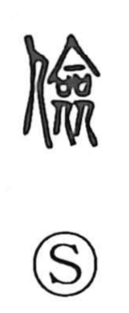

倹

Kun: tsumashii | On: ken
frugal ・ thrifty ・ modest
Explanation
Originally written 儉, this is a phono-semantic character: the person element joins the phonetic 僉. 僉 depicts people standing together to offer covenant vessels in which written prayers were placed for the gods, and so it conveys “all, together” along with a sense of reverent restraint. With the person added, 儉/倹 evokes someone conducting prayer quietly and without clamor—an image of measured, simple self-restraint that gives the meanings “frugal” and “modest.” The same phonetic 僉 appears in 検 and 険, and it supplies the shared on reading ken.